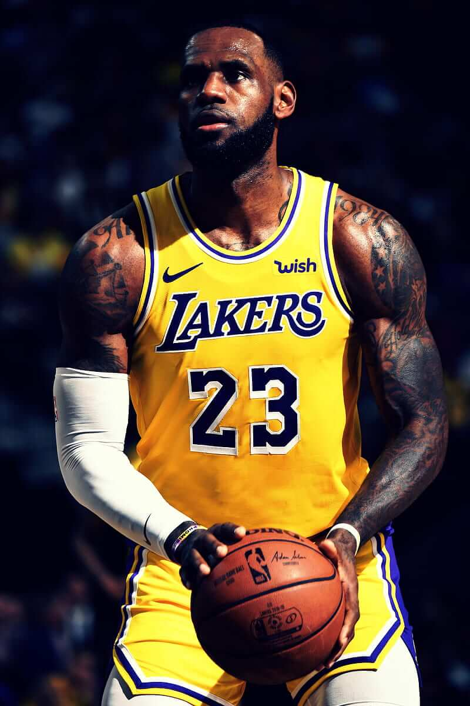
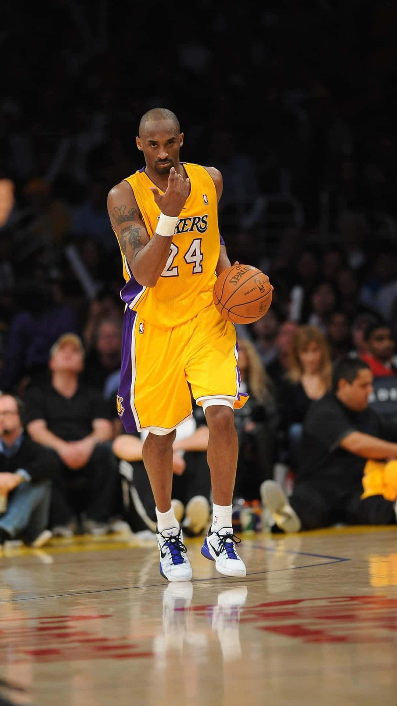
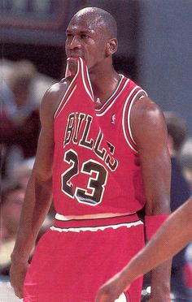

Sobre nosotros
Mi Camino en el Baloncesto fue creado con el propósito de motivar y orientar a jugadores que desean mejorar su rendimiento dentro y fuera de la cancha.

¿Qué puedes encontrar aquí?
En esta página encontrarás información sobre entrenamiento, disciplina, motivación y desarrollo deportivo.

Nuestro objetivo
Nuestro objetivo es apoyar a jugadores que quieren alcanzar su mejor versión en el baloncesto, sin importar su posición o nivel actual.